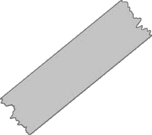

August 2024
In August 2024 I decided I wanted to learn how to do my own nails, I'd been playing with the idea for months but hadn't actually committed - until now. I started watching videos and reading how-to guides, learning safety, and gathering my supplies.

Pink Star Nails

One of my first ever Gel-X sets. These weren't bad at all considering I was an absolute beginner but unfortunately I did know a thing about retention and they only lasted maybe a day.
Chrome Nails

I was a month into my journey and had finally gotten chrome powders... didn't know much about what I was doing but loved the chrome look. (application has greatly improved trust).